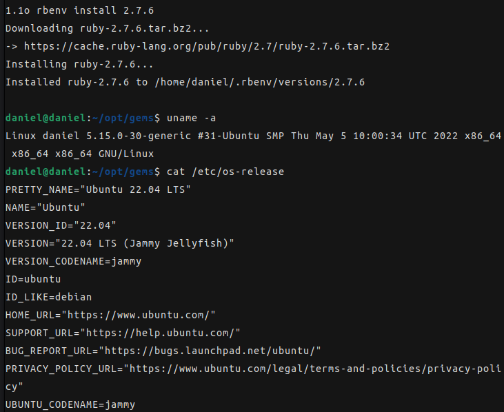

ubuntu 22.04에서 ruby 2.7.x 설치
2 min read우분투 22.04 환경에서 github page 블로그를 만들려고 했습니다.
github page는 jekyll 기반으로 정적페이지를 만들어 배포하기 위해 이것저것 설치했습니다. 기존에 windows 10 에서는 다른 블로그들을 참고하여 쉽게 환경설정이 되었지만, 이번에 Ubuntu 22.04 에서 추가로 환경을 만들다보니 막히는 부분이 있어서 정리할 겸 내용 공유합니다.
github page, jekyll 의 호환성
Jekyll은 Markdown이나 Text 등을 기반으로 static site 를 만들어 주는 툴입니다. Jekyll 은 ruby 라는 언어로 개발되었는데, 2021년 04월 릴리즈 된 ruby 3.0.1 이후 버전부터는 Jekyll 과의 호환성이슈가 발생하고 있습니다.
때문에 Jekyll을 사용해 github page를 만들기 위해서는 ruby 2.x.x 버전을 선택해야 합니다.
ubuntu 22.04에서 ruby 설치
ruby를 설치하기 위한 방법은 크게 4가지입니다.
- snap, apt 등 패키지 인스톨러를 사용한 설치
- ruby 인스톨러를 사용한 설치
- ruby 버전 관리자를 사용한 설치
- ruby 소스코드를 다운로드 하여 설치
이 중 저는 ruby 버전 관리자중 하나인 rbenv를 사용했습니다. 패키지 인스톨러부터해서 몇가지 방법으로 설치를 시도해 보았지만, Jekyll 페이지를 띄우기 까지 에러들이 발생하여 여러 방법들을 찾다 rbenv로 Jekyll 환경을 마무리 할 수 있었습니다.
rbenv 설치
rbenv github repo에서 clone 하기기
$ git clone https://github.com/rbenv/rbenv.git ~/.rbenv
rbenv 경로를 .bashrc 에 추가하기
$ echo 'export PATH="$HOME/.rbenv/bin:$PATH"' >> ~/.bashrc
$ echo 'eval "$(rbenv init -)"' >> ~/.bashrc
$ exec $SHELL
rbenv에서 ruby install 시 사용하는 ruby-build 플러그인 설치
$ git clone https://github.com/rbenv/ruby-build.git "$(rbenv root)"/plugins/ruby-build
ruby 2.7.6 설치
의존성 패키지 설치
$ apt-get install autoconf bison build-essential libssl-dev libyaml-dev libreadline6-dev zlib1g-dev libncurses5-dev libffi-dev libgdbm6 libgdbm-dev libdb-dev
ruby install
$ rbenv install 2.7.6
위 명령을 입력하면 ruby 2.7.6 버전을 다운로드하여 설치한다. 2.7.6 버전은 ruby 2.x 버전의 마지막 stable release 버전이다.
많은 블로그 등에서 위와 같은 과정으로 ruby를 install 했다.
그런데 ruby2.x에서 사용하던 의존성 중 하나인 OpenSSL 1.x.x이 ubuntu 22.04에서는 지원하지 않고 오직 OpenSSL 3.0 만 지원하고 있다.
ruby 3.x에서는 OpenSSL 3.x으로도 사용 가능하다.
하지만 Jekyll을 사용하려면 ruby 2.x를 사용해야 하기 때문에 OpenSSL 1.x를 추가로 설치해야 한다.
OpenSSL 1.x 설치
OpenSSL 1.x 다운로드
$ cd ~/Downloads
$ wget https://www.openssl.org/source/openssl-1.1.1o.tar.gz
$ tar xf openssl-1.1.1o.tar.gz
컴파일
$ cd ~/Downloads/openssl-1.1.1o
$ ./config --prefix=/opt/openssl-1.1.1o --openssldir=/opt/openssl-1.1.1o shared zlib
$ make
$ make test
$ sudo make install
SSL system cert를 OpenSSL 디렉토리에 Link 생성
$ sudo rm -rf /opt/openssl-1.1.1o/certs
$ sudo ln -s /etc/ssl/certs /opt/openssl-1.1.1o
다시 ruby 설치
설치한 OpenSSL path를 추가하여 ruby 설치
$ RUBY_CONFIGURE_OPTS=--with-openssl-dir=/opt/openssl-1.1.1o rbenv install 2.7.6
설치한 ruby 버전을 global 설정
$ rbenv global 2.7.1

Jekyll 설치 및 실행
$ gem install jekyll bundler
블로그 디렉토리에서 bundle install
(blog dir) $ bundle install
블로그 실행
(blog dir) $ bundle exec jekyll serve